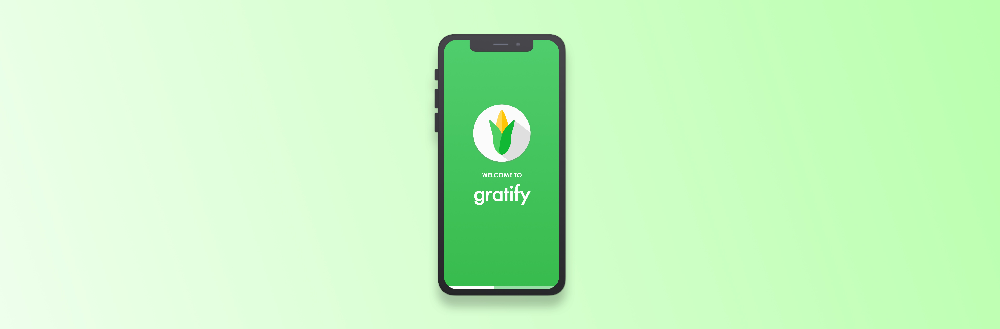

gratify
gratify is a UI/UX case study designed to help restaurants accurately track their food consumption and minimize waste.
Problem
Food is being wasted in large quantities by restaurants all around the world. In fact, the restaurant industry contributes to approximately $25 billion in food waste per year. Restaurants would save the environment, as well as a significant sum of money if they were to minimize the amount of food they waste. Working to prevent food waste can in fact cut an individual restaurant’s cost by 6%. In order to learn more about the problem space, I read several articles covering topics such as the correlation between food waste and profit margins, environmental impacts, and ways to combat the issue. Reading through this information gave me a better understanding of the fundamental causes contributing to this issue.
Target Audience
My target audience is restaurants around the world that need to minimize their food waste and become more aware of how much food they use on a frequent basis. The app allows restaurants to efficiently manage their food inventory and track the amount of food they use. By comparing metrics and data collected, the app will provide feedback to the restaurants on whether they are over-ordering or need to order more food. The overall goal is to optimize their utilization of food, whether it be through ordering just enough rations, or minimizing the amount that goes to waste. From a restaurant’s perspective, there are many useful features and requirements satisfied by the user interface and experience.
Process
As I was brainstorming concepts, I focused on developing an idea that would make a larger impact on minimizing and spreading more consciousness about food waste. Since restaurants are prime offenders, I wanted to create an experience that helps them become more conscious about their waste and minimize it. This way, their changes in perspective and actions would create a much larger impact on this global issue. After developing this idea, I wrote some notes regarding what my 3 main features of the app would be, and the overall user flow. Developing the user flow helped me understand how the app would work from the restaurant’s perspective, and help me find any inefficiencies in the app. After, I sketched out some wireframes of the user interface, and then translated to creating the mock-ups in Sketch.
Features
I focused on the following 3 features for the purposes of restaurant efficiency, usefulness, and impact:
1. Food recognition camera: Input several restaurant ingredients at once.
2. Tracker: Input sales of each recipe daily to calculate overall food use. With the data, app provides useful insights to help direct the restaurant make decisions on food ordering.
3. Donate: The goal of minimizing waste will not always be reached, so donating leftovers to a local food bank is another great option.
1. Food recognition camera: Input several restaurant ingredients at once.
2. Tracker: Input sales of each recipe daily to calculate overall food use. With the data, app provides useful insights to help direct the restaurant make decisions on food ordering.
3. Donate: The goal of minimizing waste will not always be reached, so donating leftovers to a local food bank is another great option.